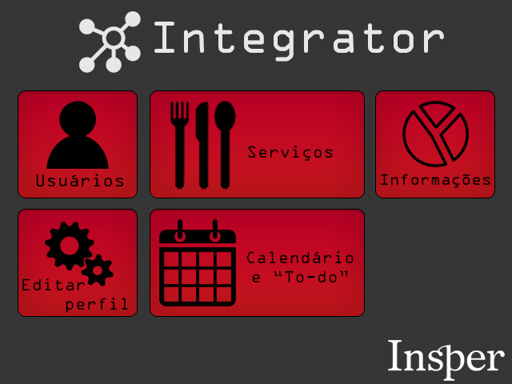

|  | Integrator | |
|---|---|---|
| Data: | março/2016 | |
| Matéria e Semestre: | Design de Software - Primeiro Semestre | |
| Duração: | 6 semanas | |
| Categoria: | Programação, Design, Empreendedorismo Tecnológico | |
| Documentação: | Escrito técnico, arquivos .py e Trello | |
| Conteúdo acadêmico: | Python, Git | |
| Palavras-chave: | Python, PyQt, Firebase, Integrator, Software | |
| Descrição: | No projeto final de Design de Software, foi desenvolvido utilizando python, pyqt e firebase, um programa para PC chamado de Integrator. O programa apresenta um sistema de login, em que o aluno cria seu perfil, um calendário acadêmico com todas as aulas da semana, assim como um sistema de tarefas, em que os usuários co-criam a "To-do list" da sala. O programa também contava com o banco de dados de todos os usuários, contendo informações relevantes (telefone, email, curso, facebook, bairro que mora (para eventuais caronas), etc. Repositório do projeto: https://github.com/martimfj/integrator |
|
| Relacionados: | Design, Empreendedorismo, Programação | |